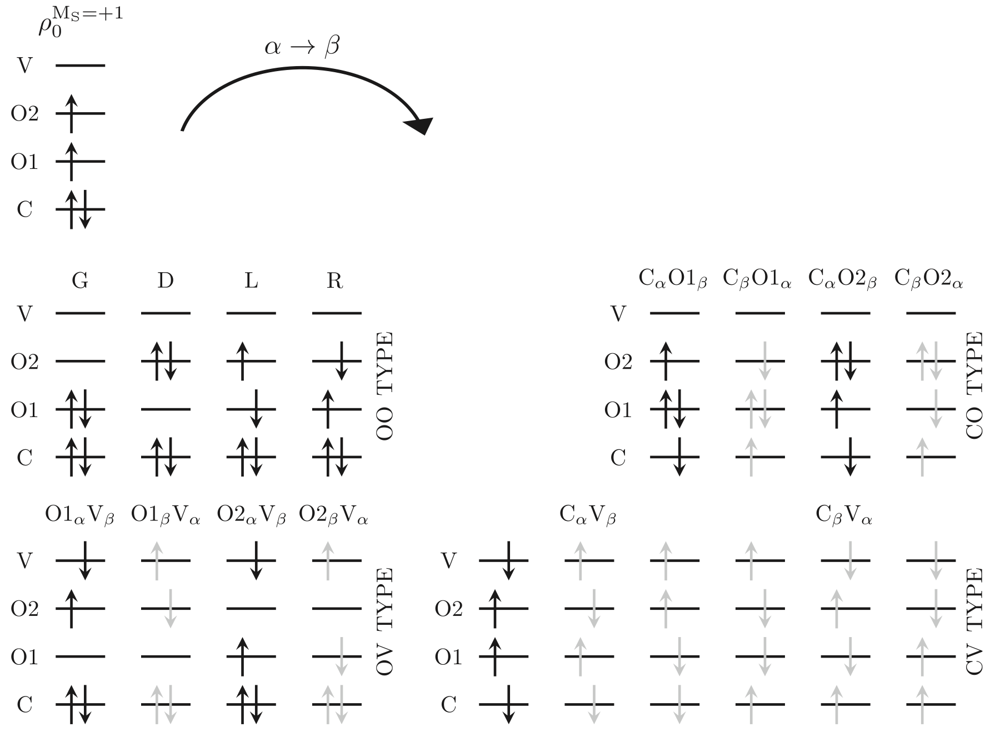
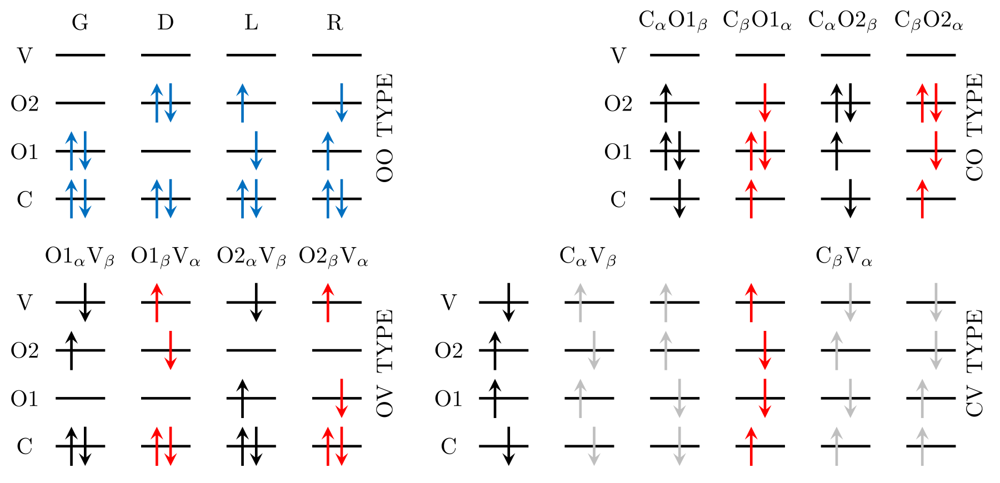

Electronic structure · Theory notebook
Mixed-Reference Spin-Flip Time-Dependent Density Functional Theory (MRSF-TDDFT)
How MRSF extends the spin-flip configuration space, and how that changes the response equations.
Here I explain the formulation we implemented in Q-Chem: a restricted open-shell reference, a collinear response kernel, and the Tamm–Dancoff approximation. The starting point is the mixed-reference approach introduced by Lee and coauthors in 2018. We use the dimensional transformations and pairing treatment from their 2019 gradient paper. [1] [2] [3]
1. What is missing from the SF-TDDFT space?
For a molecule with strong diradical character, one closed-shell configuration may not describe the low-spin states well. SF-TDDFT starts from a triplet instead, with one α electron in each of the two singly occupied orbitals. Flipping an α electron to β spin gives configurations with \(M_S=0\). Some of these would count as double excitations from a closed-shell reference, even though they require only a single spin flip from the triplet. [1]
The indices \(i,j\) label occupied orbitals and \(a,b\) label virtual orbitals in the relevant spin sector. A bar indicates β spin. In the diagrams, C denotes doubly occupied orbitals, O1 and O2 the two singly occupied orbitals, and V unoccupied orbitals. Here, “core” means the doubly occupied space, including valence orbitals.


Look first at the OO block: it contains the paired configurations G and D and the open-shell configurations L and R. The gaps appear in the CO, OV, and CV blocks. A spin flip from just one triplet component cannot generate all the spin partners shown in gray. Without those partners, the calculated states need not have a definite total spin. This is the source of spin contamination in the incomplete SF space. [1]
| Class | Standard SF | Mixed-reference SF |
|---|---|---|
| OO | G, D, L, R are present. | Both references generate these configurations; duplicates must be combined with the correct spin symmetry. |
| CO | Some spin partners are absent. | The second reference adds the missing partners. |
| OV | Some spin partners are absent. | The second reference adds the missing partners. |
| CV | The spin configuration set is incomplete. | The space expands, but some configurations remain absent. |
2. Combining the two reference density matrices
MRSF starts with both spin components of the triplet, \(M_S=+1\) and \(M_S=-1\). Their reference density matrices enter with equal weights: [1] [2]
Here \(\mathbf{x}=(\mathbf r,\sigma)\) includes position and spin. We are averaging density matrices, not adding wavefunctions. The −1 component allows β → α flips and supplies spin partners that the +1 component alone cannot reach.


The mixed-spin construction
There is a complication: in the α/β basis, averaging the two reference density matrices gives half occupations for the open-shell spin-orbitals. The ensemble RDM is therefore not idempotent. To construct the response equations, the derivation introduces two mixed-spin functions for the open-shell part: [1] [2]
The symbol \(\mathrm{i}\) is the imaginary unit. These functions are used to build an idempotent auxiliary reference. This step is more than a change of basis: rotating the original ensemble RDM would leave its fractional occupation eigenvalues unchanged. The response equations can then be separated into singlet and triplet problems.
3. Spin adaptation and dimensional transformations
Both references generate the OO configurations, so we need to combine them without double counting. With the phase convention used in our paper, the singlet OO amplitude takes the difference of the two diagonal open-shell components; the triplet takes their sum. The paired configurations G and D belong to the singlet block and do not contribute to the triplet block. [1]
The standard SF amplitude array has \(N=n_{\mathrm{occ}}^\alpha n_{\mathrm{vir}}^\beta\) elements. Spin adaptation reduces the independent singlet and triplet amplitudes to \(N-1\) and \(N-3\), respectively. We use \(U^{(S)}\) and \(U^{(T)}\) to represent them in arrays with the same dimensions as the SF array. These are the dimensional transformations from Lee, Kim, Nakata, Lee, and Choi’s 2019 paper. [3]
4. The full orbital Hessian
After the transformation, we have \(A^{(k)(0)}\). We then add the pairing term \(C^{(k)}\) to obtain the full orbital Hessian. Here \(k=S\) denotes singlets and \(k=T\) denotes triplets: [1] [3]
In this expression, \(F\) is the Kohn–Sham Fock matrix, \(C_{\mathrm{HF}}\) is the fraction of Hartree–Fock exchange, and \((pq|rs)\) is a two-electron integral in Mulliken notation. The \(U^{(k)}\) matrices perform the dimensional transformations discussed above. The superscript \((0)\) marks the Hessian before the pairing terms are added. [1]
The part inside the braces is exactly the same as the collinear SF-TDDFT Hessian kernel under TDA: two Fock-matrix terms and an exact-exchange term. In MRSF, we apply the singlet or triplet transformations on either side and add \(C^{(k)}\). This is where the connection to SF-TDDFT is clearest, although the final matrix and its eigenvalues are different. [1] [3]
The pairing term \(C^{(k)}\) couples spin-paired configurations from the two reference components. We use the construction from the 2019 paper; the full expression is given there and in our implementation paper. [1] [3]
We then solve the singlet and triplet response problems separately to obtain the target states.
References
- A. Chakraborty, Z. Pei, Y. Shao, and A. I. Krylov, “New implementation of mixed-reference spin-flip time-dependent density functional theory and application to molecules with variable diradical character and conical intersections,” J. Chem. Phys. 165, 104101 (2026). doi:10.1063/5.0340840. Source of the figures and working equations in this note.
- S. Lee, M. Filatov, S. Lee, and C. H. Choi, “Eliminating spin-contamination of spin-flip time dependent density functional theory within linear response formalism by the use of zeroth-order mixed-reference (MR) reduced density matrix,” J. Chem. Phys. 149, 104101 (2018). doi:10.1063/1.5044202. Original mixed-reference formulation.
- S. Lee, E. E. Kim, H. Nakata, S. Lee, and C. H. Choi, “Efficient implementations of analytic energy gradient for mixed-reference spin-flip time-dependent density functional theory (MRSF-TDDFT),” J. Chem. Phys. 150, 184111 (2019). doi:10.1063/1.5086895. Dimensional transformations and pairing construction used in the implementation discussed here.